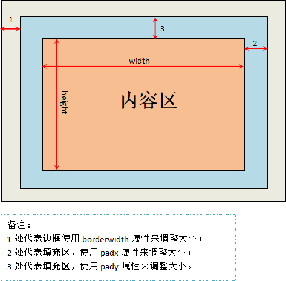
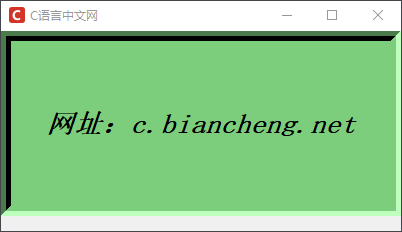
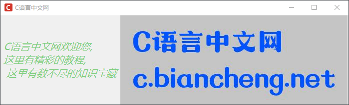
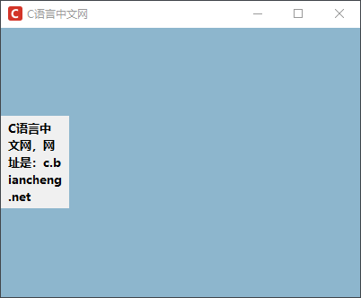

Tkinter Label标签控件
Label（标签）控件，是 Tkinter 中最常使用的一种控件，主要用来显示窗口中的文本或者图像，并且不同的 Lable（标签）允许设置各自不同的背景图片。
下面对 Label（标签）的常用属性做简单介绍：
下面通过一个示意图对 Label 背景的区域构成进行说明：
边框的宽度可以通过 borderwidth 来调整，其样式可以通过
下面看一组简单的示例，代码如下所示：
下面对 Label（标签）的常用属性做简单介绍：
| 属性名称 | 说明 |
|---|---|
| anchor | 控制文本（或图像）在 Label 中显示的位置（方位），通过方位的英文字符串缩写（n、ne、e、se、s、sw、w、nw、center）实现定位，默认为居中（center） |
| bg | 用来设置背景色 |
| bd | 即 borderwidth 用来指定 Label 控件的边框宽度，单位为像素，默认为 2 个像素 |
| bitmap | 指定显示在 Label 控件上的位图，若指定了 image 参数，则该参数会被忽略 |
| compound | 控制 Lable 中文本和图像的混合模式，若选项设置为 CENTER，则文本显示在图像上，如果将选项设置为 BOTTOM、LEFT、RIGHT、TOP，则图像显示在文本旁边。 |
| cursor | 指定当鼠标在 Label 上掠过的时候，鼠标的的显示样式，参数值为 arrow、circle、cross、plus |
| disableforeground | 指定当 Label 设置为不可用状态的时候前景色的颜色 |
| font | 指定 Lable 中文本的 (字体,大小,样式）元组参数格式，一个 Lable 只能设置一种字体 |
| fg | 设置 Label 的前景色 |
| height/width | 设置 Lable 的高度/宽度，如果 Lable 显示的是文本，那么单位是文本单元，如果 Label 显示的是图像，那么单位就是像素，如果不设置，Label 会自动根据内容来计算出标签的高度 |
| highlightbackground | 当 Label 没有获得焦点的时候高亮边框的颜色，系统的默认是标准背景色 |
| highlightcolor | 指定当 Lable 获得焦点的话时候高亮边框的颜色，系统默认为0，不带高亮边框 |
| image | 指定 Label 显示的图片，一般是 PhotoImage、BitmapImage 的对象 |
| justify | 表示多行文本的对齐方式，参数值为 left、right、center，注意文本的位置取决于 anchor 选项 |
| padx/pady | padx 指定 Label 水平方向上的间距（即内容和边框间），pady 指定 Lable 水平方向上的间距（内容和边框间的距离） |
| relief | 指定边框样式，默认值是 "flat"，其他参数值有 "groove"、"raised"、"ridge"、"solid"或者"sunken" |
| state | 该参数用来指定 Lable 的状态，默认值为"normal"（正常状态），其他可选参数值有"active"和"disabled" |
| takefocus | 默认值为False，如果是 True，表示该标签接受输入焦点 |
| text | 用来指定 Lable 显示的文本，注意文本内可以包含换行符 |
| underline | 给指定的字符添加下划线，默认值为 -1 表示不添加，当设置为 1 时，表示给第二个文本字符添加下划线。 |
| wraplength | 将 Label 显示的文本分行，该参数指定了分行后每一行的长度，默认值为 0 |
1) Label控件构成
一个控件主要由背景和前景两部分组成。其中背景由三部分构成分别是内容区域、填充区、边框，这三个区域的大小通过以下属性进行控制，如下所示：
- width/height
- padx/pady
- borderwidth
下面通过一个示意图对 Label 背景的区域构成进行说明：

图1：Label控件组成
边框的宽度可以通过 borderwidth 来调整，其样式可以通过
relief来设置（默认为平的 flat）；填充区的大小调整分为水平方向和垂直方向，可以使用padx和pady来调整；内容区则主要用来显示文字或者图片，其大小由 width/height 来控制。下面看一组简单的示例，代码如下所示：
import tkinter as tk
win = tk.Tk()
win.title("C语言中文网")
win.geometry('400x200')
win.iconbitmap('C:/Users/Administrator/Desktop/C语言中文网logo.ico')
# 若内容是文字则以字符为单位，图像则以像素为单位
label = tk.Label(win, text="网址：c.biancheng.net",font=('宋体',20, 'bold italic'),bg="#7CCD7C",
# 设置标签内容区大小
width=30,height=5,
# 设置填充区距离、边框宽度和其样式（凹陷式）
padx=10, pady=15, borderwidth=10, relief="sunken")
label.pack()
win.mainloop()
程序运行结果，如下所示：

图2：设置Label标签
图2：设置Label标签
2) 标签添加背景图
Label（标签）除了可以显示文本之外，还可以用来显示图片，通过一组示例做简单的说明，代码如下所示：
import tkinter as tk
win = tk.Tk()
win.title("C语言中文网")
win.iconbitmap('C:/Users/Administrator/Desktop/C语言中文网logo.ico')
#显示图片(注意这里默认支持的图片格式为GIF)
photo = tk.PhotoImage(file = 'C:/Users/Administrator/Desktop/c.biancheng.gif')
print(type(photo))
# 将图片放在主窗口的右边
lab =tk.Label(win,image=photo).pack(side="right")
# 显示文字，设置文本格式
text = "C语言中文网欢迎您,\n"\
"这里有精彩的教程,\n "\
"这里有数不尽的知识宝藏"
lab_text =tk.Label(win,text=text,fg ='#7CCD7C',font=('微软雅黑',15,'italic'),justify='left',padx=10).pack(side='left')
win.mainloop()
程序运行结果：

图3：程序运行结果
图3：程序运行结果
注意：不同的 TK 版本所支持的图片格式也不完全相同，通过对上述示例的测试，此处只支持显示 GIF 格式的图片。
3) Message控件
Message 控件与 Label 控件的功能类似，它主要用来显示多行不可编辑的文本信息，与 Label 的不同之处在于该控件增加了自动分行的功能。下面对它做简单的介绍，示例如下：
from tkinter import *
#创建主窗口
win = Tk()
win.config(bg='#8DB6CD')
win.title("C语言中文网")
win.geometry('400x300')
win.iconbitmap('C:/Users/Administrator/Desktop/C语言中文网logo.ico')
txt = "C语言中文网，网址是：c.biancheng.net"
msg = Message (win, text=txt,width =60,font=('微软雅黑',10,'bold'))
msg .pack (side=LEFT)
#开始程序循环
win .mainloop ()
程序运行结果：

图4：Tkinter Message控件
图4：Tkinter Message控件
关注公众号「站长严长生」，在手机上阅读所有教程，随时随地都能学习。内含一款搜索神器，免费下载全网书籍和视频。

微信扫码关注公众号